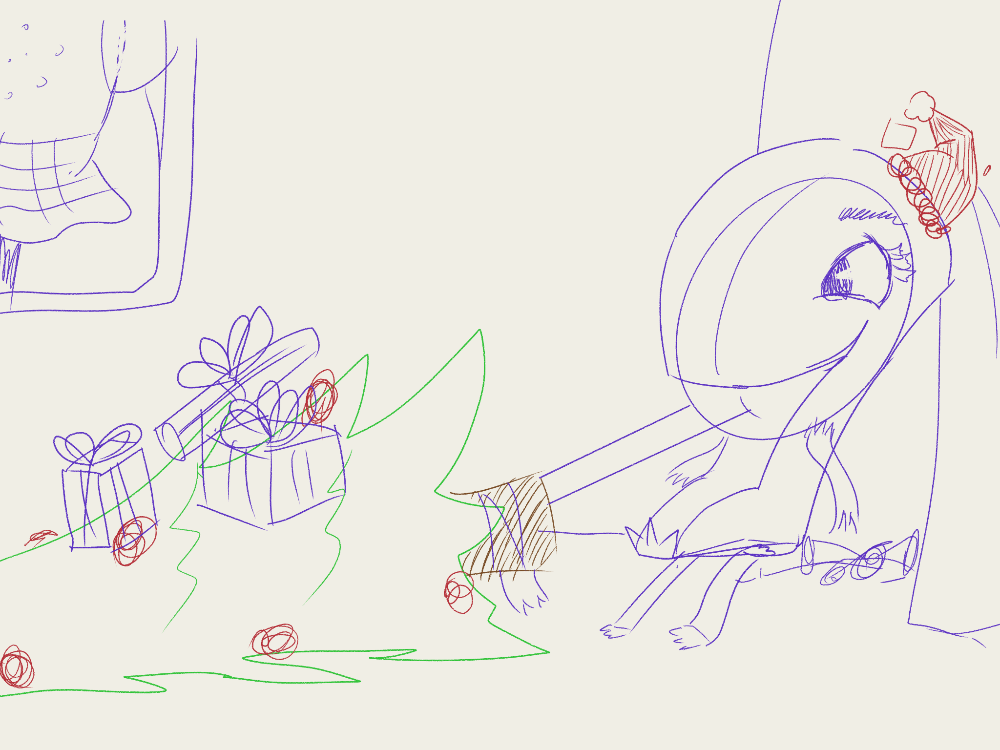
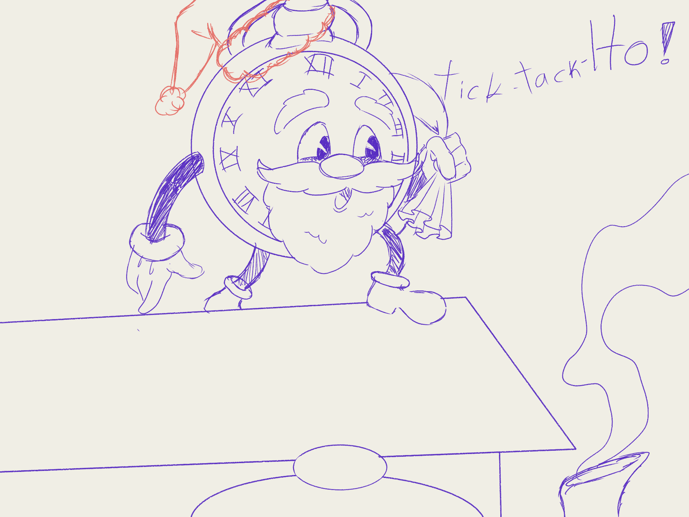
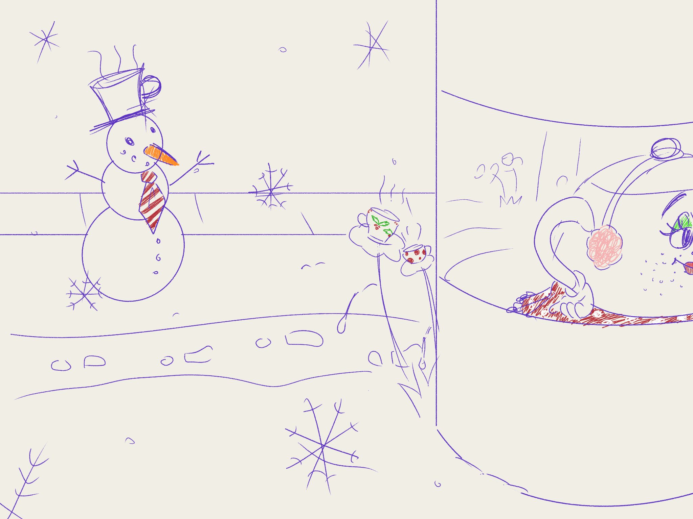

Archivo del proceso creativo
Este espacio reúne el material que dio forma a Cinta Perdida: desde las primeras ideas y bocetos hasta las pruebas visuales y las versiones finales.
BOCETOS · EDICIÓN NAVIDEÑA
Primeras exploraciones de las postales navideñas. Estos dibujos forman parte del proceso de diseño y muestran las ideas en su etapa de boceto.



Material en proceso. Las postales se presentan aquí como bocetos; las versiones terminadas podrán incorporarse más adelante.